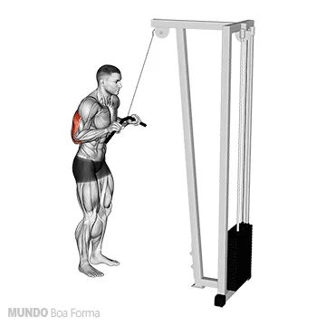

Peito
15 séries

O peito é dividido em 3 partes: superior, médio e inferior. Quando treinamos o peitoral outros músculos atuam em conjunto como o tríceps e o deltóide. É impossível desligar um do outro, ou melhor, isolar somente o peito, mas existem estratégias para o treino.
PEITO MAQUINA VOADOR

3 séries (12-10-8)
Crucifixo no voador, os principais músculos recrutados são: peitoral maior e deltóide anterior
SUPINO BANCO RETO COM BARRA

3 séries (12-10-8)
No Supino, os principais músculos recrutados são: peitoral maior, deltóide anterior e tríceps.
SUPINO INCLINADO BANCO A 30° COM BARRA RETA - PEGADA ABERTA

3 séries (12-10-8)
Para ter uma exigência muscular do peitoral e do tríceps braquial, sugiro trabalhar com o banco inclinado a 30° e mãos a uma distância que promova um ângulo de 90°, na articulação do cotovelo, quando a barra estiver próxima ao peitoral. Os músculos recrutados são:ombro, peitoral superior e costas.
PULLOVER COM HALTER BANCO RETO

3 séries (12-10-8)
O Pullover é um exercício completo para membros superiores, com uma maior ativação muscular do peitoral. Essa série consegue acionar também a grande dorsal, o serrátil anterior e os tríceps, todos de modo secundário.
CROSS OVER POLIA ALTA
3 séries (12-10-8)
O crossover polia alta é um exercicio bem completo que desenvolve e estimula o peitoral inferior
Tríceps 9 séries
O Tríceps é dividido em 3 porções: cabeça longa, lateral e medial.
TRÍCEPS TESTA COM BARRA

3 séries (12-10-8)
Neste exercício, dê preferência para barra w com pegada fechada. Trabalha tanto a cabeça lateral como a cabeça longa.
TRÍCEPS SUPINO COM BARRA

3 séries (12-10-8)
No supino, dê prefererência para a barra w com pegada fechada. Trabalha a porçao medial do triceps.
TRICEPS PUXADA NO PULLEY
3 séries (12-10-8)
Polia alta com barra reta ou inclinada.Temos aqui um exercício completo, que trabalha a cabeça lateral do tríceps melhor do que qualquer outro movimento